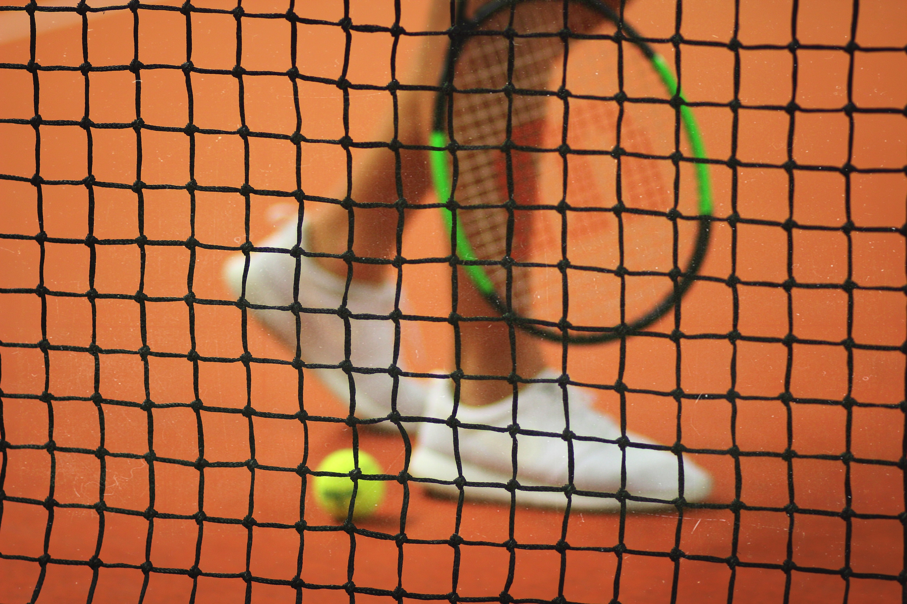

JIMMY'site
일기
일
취미
Jimmy'hobby

테니스 참 재미있는 운동입니다.
실력은 정말 안 느네요..ㅠㅠ
섹소폰을 잘 불어야 된다는 강박은 없습니다.
음악과 나를 연결시켜주는 고리 같습니다. 이 마저도 안하면 음악과 멀어질것 같아서..
나에게 여행은 현실의 도피처 입니다. 또 다른 일상이 되어야 하는데!!
아직 마음에 여유가 없네요....